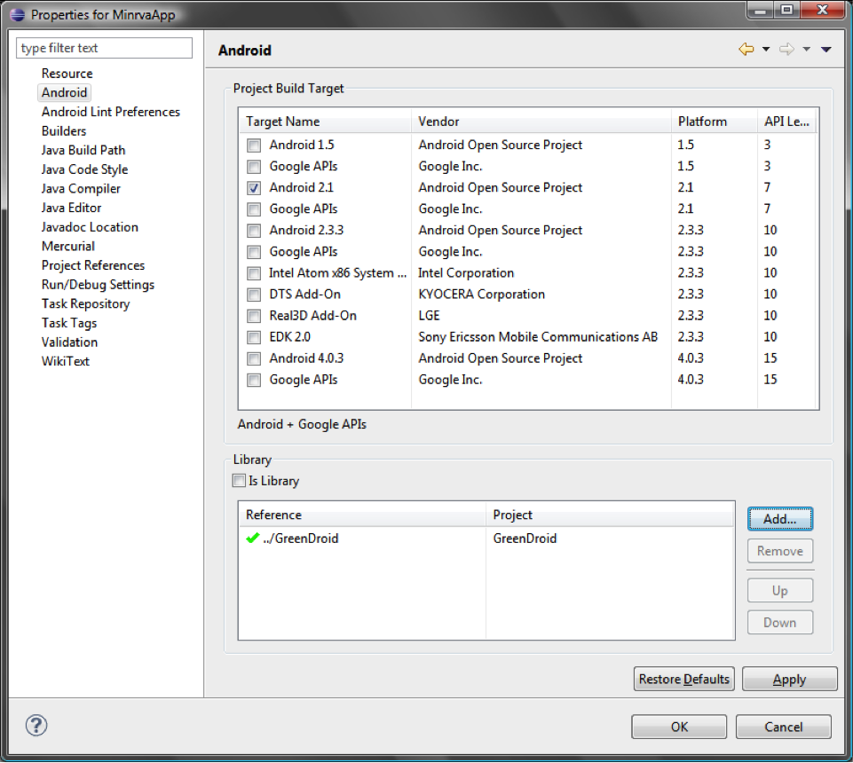
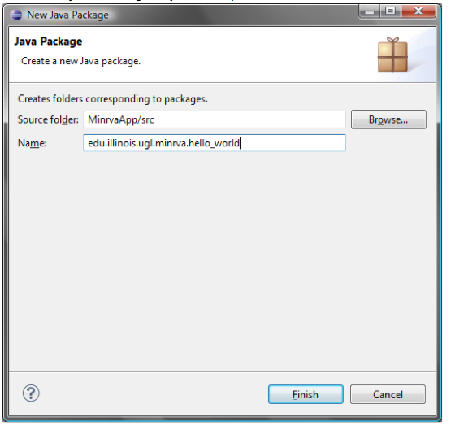
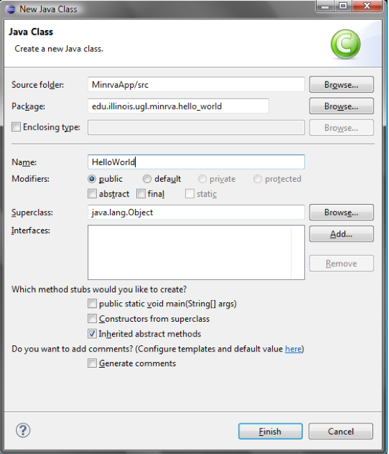

How to create an Android Application
Version 0.1
Copyright
03.31.13
| Revision History | |||
|---|---|---|---|
| Revision 0.1 | 03.31.13 | (Senior Project Group Names) | created |
Creating a basic Android application
This tutorial covers writing a basic Android application that will access a Minrva web service.
In this tutorial, Eclipse (4.2) and Android (2.3) is used.
Table of Contents
- Installation
- Installing Eclipse
- Installing the ADT through Eclipse
- Setting up an Android Project
- Create a sample module
- How to create an Android Application
- Setting up the Minrva Project and GreenDroid
- Clone the Minrva project
- Import the Minrva Project into Eclipse
- Import GreenDroid
- Link GreenDroid and Minrva
- Start the application
- Running on an emulator
- Running on a connected device
- Start using Minrva!
- General module example (this is how the app generally works!)
- Logging in & Fines.onSuccessfulLogin()
- The DownloadFines Class
- The bindData() method
- Creating a new module for Minrva
- Final Code
- HelloWorld.java
- hello_world.xml
- Final Module Screenshot
Installation
Installing Eclipse:
Version 4.2.2 of Eclipse IDE is available here:
http://www.eclipse.org/downloads/packages/eclipse-classic-422/junosr2
Follow instruction on this page to download and install Eclipse.
Installing the ADT (Android Development Tools) through Eclipse:
Follow the instructions given here to install the ADT plugin through Eclispe:
http://developer.android.com/sdk/installing/installing-adt.html
Installing the tools will add the Android Virtual Device Manager and Android SDK Manager options in Eclipse.
Setting up android project
Details and step-by-step instructions for setting up a new android project can be found here: http://developer.android.com/training/basics/firstapp/creating-project.html
Note that additional, advanced instructions are available from the same webpage, by following the appropriate links. Information is available on the android manifest, view items (text boxes, buttons, etc.), activity listeners, and more.
Setting up the Minrva Project and GreenDroid
- 1. Clone the Minrva project
The first step is to clone the Minrva project repository. In our example, it is done using Mercurial and TortoiseHG. The repository can be found at the URL shown below. Clone the project to whichever local directory you choose. When cloning, you will be prompted for the username and password. Enter it to continue with the download

- 2. Import the Minrva Project into Eclipse
The next step is to import the project into eclipse, to begin editing. As mentioned, we are using Eclipse version 4.2. Start eclipse. Once eclipse is up and running, we are going to import the project. Select File->Import. In the new window, select “Existing Android code into Workspace”.

In the new window, click “Browse” to locate the project directory. We have to navigate to the correct directory of the Minrva project. As shown below, it is located at “[Cloned directory]\MinrvaApp\Android\Minrva”. The Minrva folder is the root directory of the project, and that is the folder that must be selected for the import. You can select any other options necessary on this screen, such as “Copy project into workspace”, which is convenient if the cloned directory is not within the eclipse workspace. Once you have the settings set the way you would like, click finish to import the project. Note that the project may be imported as “edu.illinois.ugl.minrva.core.SpringBoard”. To change this, right-click on the project folder, and select Refactor->Rename. Enter the new name, make sure “Update References” is checked, and click “Ok”. Now the project will have a new name.

- 3. Import GreenDroid
The Minrva app makes use of an outside library, known as GreenDroid, to create many of the UI elements. To use this functionality, the GreenDroid project must also be imported, following the same steps as above. Select File->Import as before, and select “Existing Android code into Workspace”. In the new window, click “Browse”, and navigate to the same directory as before, but select the “GreenDroid” folder, instead of “Minrva”. Click “Finish” when done.
- 4. Link GreenDroid and Minrva
Now that both project are imported, it is necessary to link the two. This is a fairly simple process. Right-click on the Minrva project, and select properties. In the new window, select “Android” from the left-hand menu. In the “Library” section, click “Remove” to remove the GreenDroid reference. Then, click “Add” to re-add the GreenDroid library (If the imports worked as described, the GreenDroid library should be immediately visible. If not, try importing the projects again).
 - 5. Start the application
Now that everything is imported and linked, we can start the application on an android device. To run the application, simply right-click on the project in eclipse, and select Run As->Android Application.
5a. Running on an emulator
An emulator should be established when the android SDK was installed. By default, if no device is plugged in, the application will run on the emulator. If not, please follow these instructions for setting up the emulator. After the emulator is installed, clicking Run As->Android Application will launch the emulator (if it is not already open), install and run the app (on the emulator). After the emulator and application are launched, they can be interacted with as usual.
5b. Running on a connected device
Instructions for running on a connected device can be found here. If an android device is plugged in, eclipse should automatically run the application on that device. The application should start automatically. If a previous version of the application has already been installed on the device, you may be prompted to remove the old version before continuing. Instructions for removing applications will differ by device. Please consult the manufacturer’s instructions for your particular device. Once the application is removed, follow step 5 to start the application again.
- 6. Start using Minrva!
That’s all it takes to get Minrva up and running for development! You can now start creating your own module, following the steps below. We will go through a basic tutorial on creating your own simple module that showcases some of the features available to you.
Note that some modules will require a special username/password login to access. Consult your sysadmin for more information. Also note that most modules will require a persistent internet connection to function correctly, and the app may crash if one is not established. WiFi is recommended, but mobile data will work as well. Internet pass-through is untested, and may produce unwanted results.
General module example (this is how the app generally works!)
-
This is a basic overview of how the Fines module works. It is meant to give an introduction to the basics of how the Minrva application works at a more basic level, and to facilitate development of a new module. We will also look at another, more in depth example briefly later or, to elaborate on the background web services. Additionally, we will also provide a step by step module creation example, detailing the entire process.
-
The first portion to discuss is the code to create the activity: onCreate. This is called when the activity starts, and is responsible for establishing the basics.
public void onCreate(Bundle savedInstanceState)
{
// Load
super.onCreate(savedInstanceState);
setActionBarContentView(R.layout.fines_main);
// Get reference
activity = this;
// Setup title bar
dropDownSetup();
// Get layout elems.
tv = (TextView) findViewById(R.id.message);
// List
lis = new ArrayList < ListItem >();
ma = new MinrvaAdapter(this, lis);
lv = (ListView)findViewById(R.id.fines_list);
lv.setAdapter(ma);
// Create login form
lf = new LoginForm(this, this, R.string.fines_acc_type, R.string.fines_auth);
// Log user in
lf.login();
}
-
The first two lines will be the default code added by the new project. They read the provided layout file (“fines_main.xml”), and translate that to what is seen on the screen.
-
The next line after that will get a reference to the current activity. This particular reference is used later on to show a progress bar. In general, whenever any kind of dialog box, progress bar, etc. is shown on top of an application, it (the box) requires a reference to the current activity (window) that it is displayed on.
-
Next up is code to setup the dropdown menu used by the module. Unless changes need to be made, this can be left alone.
-
The next two sets of lines are responsible for getting references to the screen elements. This module uses two elements:
-
A TextView for displaying a message to the user (in this case, the total dollar amount of the fines)
-
A ListView for displaying the list of fines. When using a ListView, it is necessary to set an adapter that handles how the input data is displayed on the list. In this case, the MinrvaAdapter handles this, and can just be setup as shown, unless a custom adapter is required.
-
-
The final step is to invoke the login screen. Again, this is handled exactly as shown above. The parameters are a LoginHandler, Activity, and two webservice uris, which describe the type of webservice that should be called (on a successful login).
Logging in & Fines.onSuccessfulLogin()
/**
* Handler for login that has authenticated credentials.
*/
public void onSuccessfullLogin(String username, String password)
{
new DownloadFines().execute(username, password);
}
After login() is called in onCreate(), onSuccessfulLogin() is called when the user enters in a valid username and password into the dialog box displayed by login(). That username and password combination is then sent to a subclass of AsyncTask: DownloadFines, which actually downloads and displays the user’s fines.
The DownloadFines Class
/**
* AsyncTask used to download data from MinrvaServices api.
*/
private class DownloadFines extends AsyncTask < String, Void, Fine[] >
{
ProgressDialog progressDialog;
@Override
protected void onPreExecute()
{
// Clear current list before downloading more stuff
lis.clear();
ma.notifyDataSetChanged();
// Show a loading dialog
progressDialog = ProgressDialog.show(activity, "", "Loading...");
}
@Override
protected Fine[] doInBackground(String... params)
{
// Add username and password to post data
List < NameValuePair > nameValuePairs = new ArrayList < NameValuePair >();
nameValuePairs.add(new BasicNameValuePair("username", params[0]));
nameValuePairs.add(new BasicNameValuePair("password", params[1]));
// Download data
String uri = getString(R.string.fines_list);
Fine[] fines = HTTP.downloadObjects(nameValuePairs, uri, Fine[].class);
return fines;
}
@Override
protected void onPostExecute(Fine[] fines)
{
if(fines.length == 0)
{
tv.setVisibility(View.VISIBLE);
lv.setVisibility(View.GONE);
}
else
{
tv.setVisibility(View.VISIBLE);
lv.setVisibility(View.VISIBLE);
}
bindData(fines);
ma.notifyDataSetChanged();
progressDialog.dismiss();
}
}
Even though the class is started by creating an instance of it and calling execute(), the actual functionality is split into several functions. In this example, there are three functions that are executed in this order when execute() is called:
- onPreExecute()
- doInBackground()
- onPostExecute()
These three functions are already included in the base AsyncTask class; any AsyncTask will generally follow this execution structure. In the Fines class, the functionality has been overriden to do these things:
- onPreExecute() - this method clears the current view and shows a “Loading...” dialog while the next two methods run
- doInBackground() - this method asynchronously sends the credentials given in the execute() method for the class to the server using a specific fines data URL, and receives a JSON object from the server
- onPostExecute() - this method processes the received data and updates the UI of the Fines activity to display the received data
The bindData() method
/**
* Add data to array of data that is bound to list adapter. This function is responsible for layout design of list items.
*
* @param fines
* @return
*/
public void bindData(Fine[] fines)
{
double total = 0;
for(int i = 0; i < fines.length; i++)
{
// Get fine
Fine fine = fines[i];
// Get data from fine
String inst = fine.getInstitution();
String[] dates = fine.getDates();
String[] titles = fine.getTitles();
String[] types = fine.getTypes();
String[] amounts = fine.getAmounts();
// Format data and add to list view
for(int j = 0; j < types.length; j++)
{
boolean zero = amounts[j].compareToIgnoreCase("") == 0;
if(!zero)
{
// Calculate total
if(!amounts[j].equalsIgnoreCase(""))
{
try { total += Double.parseDouble(amounts[j]); }
catch(NumberFormatException e) {}
}
// String
String txt = "";
txt += "<b>Type:</b> " + types[j] + "<br/>";
txt += "<b>Date:</b> " + dates[j] + "<br/>";
txt += "<b>Location:</b> " + inst + "<br/>";
Spanned s = Html.fromHtml(txt);
String amt = "$" + amounts[j];
// Build List Item 1
ItemView ivTitle = new ItemView(titles[j], R.id.title);
ItemView ivInfo = new ItemView(s, R.id.info);
ItemView ivAmount = new ItemView(amt, R.id.amount);
// List Item
ListItem li1 = new ListItem(null, R.layout.fines_li, false);
li1.add(ivTitle);
li1.add(ivInfo);
li1.add(ivAmount);
// Build List Item 2
ListItem li2 = new ListItem(null, R.layout.fines_div, false);
// Add List Items to list
lis.add(li1);
if(i != fines.length - 1 || j != types.length - 1)
lis.add(li2);
}
}
}
// Make total cost message
String txt = "You owe: ";
if(total > 0)
{
DecimalFormat df = new DecimalFormat("#.00");
txt += "$" + df.format(total);
}
else
txt += "nothing!";
// Display total cost message
tv.setText(txt);
}
This method examines the JSON object returned by the server and puts the data it found into a ListView that will display the fines information. At the end of the method, the total amount of the fines returned by the server is calculated and put into a TextView that is then displayed at the top of the Fines page.
Creating a new module for Minrva
Start creating a new module by creating a new package (File->New->Package or right-click on the project->New->Package) in the Source Code Tree. In this example we’ll name it “edu.illinois.ugl.minrva.hello_world”; then create a class file for the module named “HelloWorld.java”, leaving every field except for “Name” as the default.
 The file should contain only a little bit of code; it should look like this:
package edu.illinois.ugl.minrva.hello_world;
public class HelloWorld {
}
The Minrva application uses the GreenDroid application for a lot of functionality, so instead of using the Activity superclass, Minrva modules will subclass “GDActivity”. So the first change to make would be changing the class definition to this:
package edu.illinois.ugl.minrva.hello_world;
import greendroid.app.GDActivity;
public class HelloWorld extends GDActivity {
}
We’ll start creating our new Hello World app by basing our code from the Cite module since it contains the basic structure of a Minrva module that doesn’t need authentication functionality. In particular, we’ll start with these two pieces:
- onCreate()
- an AsyncTask class with:
- onPreExecute()
- doInBackground()
- onPostExecute()
private Activity activity;;
// Passing it along
int imageId;
String lbl;
private TextView hello_world_citation;
@Override
public void onCreate(Bundle savedInstanceState)
{
// Load
super.onCreate(savedInstanceState);
// Title bar
setActionBarContentView(R.layout.hello_world);
// Citation Text View
hello_world_citation = (TextView)findViewById(R.id.hello_world_citation);
// Get stuff...
activity = this;
lbl = getIntent().getStringExtra(GD_ACTION_BAR_TITLE);
imageId = getIntent().getIntExtra(GD_ACTION_BAR_ICON, R.drawable.stub);
}
Then copy this code for the DownloadHelloWorldCitation class into the HelloWorld class; it contains the code that handles the citation download:
private class DownloadHelloWorldCitation extends AsyncTask < Void, Void, Citation[] >
{
ProgressDialog progressDialog;
@Override
protected void onPreExecute()
{
// Show a loading dialog
progressDialog = ProgressDialog.show(activity, "", "Loading...");
}
protected Citation[] doInBackground(Void... params)
{
// Download data
String cite_uri = getString(R.string.cite_apa);
cite_uri += "/uiu_6957086";
Citation[] citations = HTTP.downloadObjects(cite_uri, Citation[].class);
return citations;
}
protected void onPostExecute(Citation[] citations)
{
progressDialog.dismiss();
String errMsg = "Sorry, no APA citation is available.";
if(citations == null || citations.length == 0 || citations[0].getCitation().length() == 0)
{
Toast.makeText(activity, errMsg, Toast.LENGTH_LONG).show();
}
else
{
hello_world_citation.setText(Html.fromHtml(citations[0].getCitation()));
}
}
}
Finally, add this method to the HelloWorld class; this is the method that starts the download of the citation once the button is touched:
public void done(View v)
{
new DownloadHelloWorldCitation().execute();
}
This completes the basic structure for our module. Now, it needs to be integrated into the rest of the app; it can’t be reached by the main components of the existing Minrva application until these steps are completed:
- Open Springboard.java in package edu.illinois.ugl.minrva.core; add a statement to import the HelloWorld class
- import edu.illinois.ugl.minrva.hello_world.HelloWorld
- Add this line to the onCreate() method in SpringBoard.java:
- mFams.add(new Family("Hello World!", R.drawable.ic_launcher_owl, HelloWorld.class));
- place it next to the other mFam.add() statements in onCreate()
- Add your new HelloWorld class to AndroidManifest.xml, in the res folder, by adding this line to your AndroidManifest.xml file, next to the other activity elements
- <activity android:name=".hello_world.HelloWorld" android:configChanges="orientation|keyboardHidden"/>
- Create a file called hello_world.xml in the layout folder, and copy the contents of the hello_world.xml code listed below into it
- This creates a layout for the module when it’s displayed; it’s based on the layout of the existing Fines module.
Final Code
HelloWorld.java
package edu.illinois.ugl.minrva.hello_world;
import android.app.Activity;
import android.app.ProgressDialog;
import android.content.Intent;
import android.os.AsyncTask;
import android.os.Bundle;
import android.text.Html;
import android.view.View;
import android.widget.TextView;
import android.widget.Toast;
import edu.illinois.ugl.minrva.R;
import edu.illinois.ugl.minrva.cite.Display;
import edu.illinois.ugl.minrva.cite.models.Citation;
import edu.illinois.ugl.minrva.core.SpringBoard;
import edu.illinois.ugl.minrva.core.connections.HTTP;
import greendroid.app.GDActivity;
import android.widget.RadioGroup;
public class HelloWorld extends GDActivity {
private Activity activity;; // keep these two semicolons
// Passing it along
int imageId;
String lbl;
private TextView hello_world_citation;
@Override
public void onCreate(Bundle savedInstanceState)
{
// Load
super.onCreate(savedInstanceState);
// Title bar
setActionBarContentView(R.layout.hello_world);
// Citation Text View
hello_world_citation = (TextView)findViewById(R.id.hello_world_citation);
// Get stuff...
activity = this;
lbl = getIntent().getStringExtra(GD_ACTION_BAR_TITLE);
imageId = getIntent().getIntExtra(GD_ACTION_BAR_ICON, R.drawable.stub);
}
/**
* Done button.
* @param v
*/
public void done(View v)
{
new DownloadHelloWorldCitation().execute();
}
/**
* AsyncTask used to download data from MinrvaServices api.
*/
private class DownloadHelloWorldCitation extends AsyncTask < Void, Void, Citation[] >
{
ProgressDialog progressDialog;
@Override
protected void onPreExecute()
{
// Show a loading dialog
progressDialog = ProgressDialog.show(activity, "", "Loading...");
}
protected Citation[] doInBackground(Void... params)
{
// Download data
String cite_uri = getString(R.string.cite_apa);
cite_uri += "/uiu_6957086";
Citation[] citations = HTTP.downloadObjects(cite_uri, Citation[].class);
return citations;
}
protected void onPostExecute(Citation[] citations)
{
progressDialog.dismiss();
String errMsg = "Sorry, no APA citation is available.";
if(citations == null || citations.length == 0 || citations[0].getCitation().length() == 0)
{
Toast.makeText(activity, errMsg, Toast.LENGTH_LONG).show();
}
else
{
hello_world_citation.setText(Html.fromHtml(citations[0].getCitation()));
}
}
}
}
hello_world.xml
< ?xml version="1.0" encoding="utf-8"? > <ScrollView xmlns:android="http://schemas.android.com/apk/res/android" android:layout_height = "wrap_content" android:layout_width = "fill_parent" > <LinearLayout android:layout_width="fill_parent" android:layout_height="wrap_content" android:orientation="vertical" > <View android:id="@+id/div" android:layout_height="2dp" android:layout_width="fill_parent" android:background="@color/goldenrod_8" /> <Button android:id="@+id/btnDone" android:layout_width="fill_parent" android:layout_height="wrap_content" android:text="Hello World! (citation)" android:onClick="done" android:layout_marginTop="10dp" android:layout_marginLeft="10dp" android:layout_marginRight="10dp" /> <TextView android:id="@+id/hello_world_citation" android:textColor="@color/black" android:textSize="@dimen/medium_font" android:background="@drawable/citation_shape" android:layout_width="fill_parent" android:layout_height="wrap_content" android:padding="5dp" android:layout_marginTop="10dp" android:layout_marginLeft="10dp" android:layout_marginRight="10dp" /> </LinearLayout> </ScrollView>